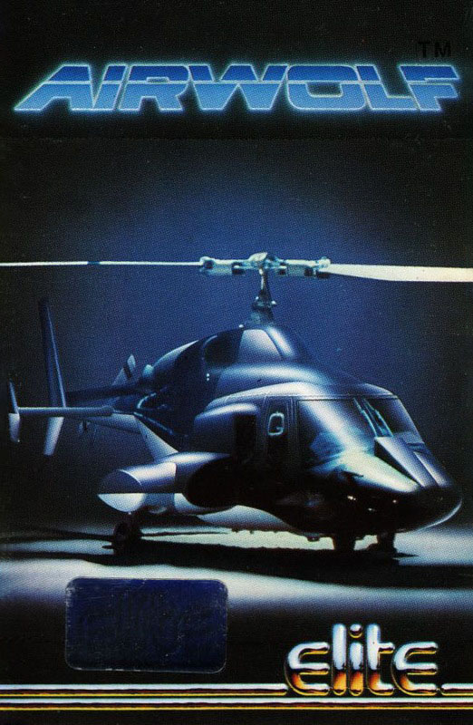
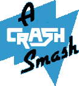
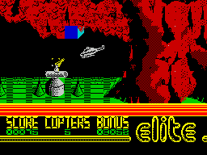
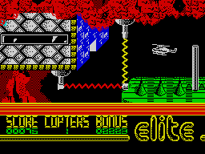

Airwolf


{kind=link}

| Publisher: | Elite |
| Price: | £6.95 |
| Year: | 1984 |
| Source: | CRASH, Issue 13 |

As Stringfellow Hawke, a former Vietnam chopper pilot, and the only man in the free world trained to fly the billion-dollar helicopter Airwolf, you have been assigned a dangerous rescue mission by the ‘Firm’.
Five important US scientists are being held hostage deep in a subterranean base beneath the scorching Arizona desert. You must guide Airwolf on a series of perilous missions and bring about their release, each scientist one at a time. Only destruction of the defence control boxes strategically positioned within the cavern will allow Airwolf to descend to the heart of the base where the scientists are held.

So says the exciting inlay to this new game from Elite, the officially licensed version of the recent hit TV series starring Jan Michael Vincent and Ernest Borgnine.
The action takes place over several interlinked, scrolling screens, starting above ground. On the first two screens you are immediately faced with the defence fields, assembled boxes of blue which must be shot away box by box with the Airwolf’s powerful cannon. The problem is that the entire field regenerates itself within only a few seconds and you have to start all over again. Gaining the passage takes you along to the cavern entrance, also guarded by a similar field, only now you are shooting down. From there on each cave is guarded by large guns, electric fields, and the very narrowness of the cavern passages makes life tough. To survive a screen is not to be finished with it, since your actions on another screen may well alter the situation on the earlier one, allowing you to backtrack to get a stage further.
Airwolf is a thoroughbred helicopter and like any aristocrat is difficult to handle, one problem being that it has to be flown to keep it airborne, none of this negative gravity to help with the shooting.
CRITICISM

‘Airwolf is one of those games you’re either going to be terribly addicted to and play to death, or you’re going to switch it off. It’s not that the game is bad, on the contrary it’s very good. BUT it’s so damn hard to get into and it takes practice just to get through the first obstacle. Like all other Elite games, Airwolf has very good graphics and the sound is alright. Your helicopter responds well to your actions and the game is fun to play (it would be better with a couple of friends)! If you fancy yourself a bit of an arcade ace then Airwolf could well prove you wrong! A vital accessory for this game is a strong firing finger — without it, you’re lost before you start. Airwolf is a slick program that is worth buying because it will keep you entertained for ages.’
‘Licensed games from well known films or TV often have little to do with the original, relying on the original to sell them. Airwolf is no exception — okay it is a helicopter, but so what, and so what indeed, Airwolf doesn’t need Jan Michael to sell it, the game can do it all by itself. This is one of the meanest arcade shoot em ups since they brought Scramble out on the big machines. The pace is violent, furiously fast and will totally destroy your index finger in the process. The game is hard and allows you no respite — you no sooner get through a defence ring and onto another screen with a sigh of relief and NO — it’s off again. Thrilling stuff! One clever touch is the neat recovery of a mistake made on the inlay which omits to tell you the fire-button. The loading screen finishes with the large words C TO SHOOT. Press C at your peril!’
‘There’s more to this game than meets the eye. At first I thought it was a damned difficult game with seemingly little content, just pretty graphics, with realistic shaded trees and snow-capped mountain tops in the distance. Looks good, eh? Well, after about an hour and a half of trying to remove a sing wall I was through, no, not through with the game, through with the wall, and then there was another wall, another half an hour of perseverance was spent on it. I was through, YIPPEE! At last, I could get into the game for real, down into the deep dark depths of the caverns I dropped to find ray guns trying to destroy me. Little did they know I was more intelligent than that, frantically shooting what looked like a doorstop, it opened another cavern — exciting isn’t it? On I went to forcefields, my goodness, they were tough to get through, but me being me, I got through it. Faced with torturous cannon as they tried to take pot shots at me, lucky was I that I had a high-performance jetcopter — convenient isn’t it? Then there was a moron of a cannon, would it let me through? No it wouldn’t let me through it shot in every direction. What do I do, I thought, as my limp finger was dropping off the fire button and my joystick was smoking with action and rage. Well, that’s for you to find out. This game is incredibly difficult, but highly playable and addictive. Graphics are neat and futuristic, detail is quite an asset to this game. Elite have gone back into the air again with a winner. Why not buy it — then you can suffer, as much as I have had to do.’
COMMENTS
| Control keys: | Q to T/A to G up/down, Z/X left/right, C to shoot |
| Joystick: | Kempston |
| Keyboard play: | Very responsive and well laid out for left or right hands |
| Use of colour: | Excellent |
| Graphics: | Detailed, smooth and imaginative, with very good scrolling |
| Sound: | Good |
| Skill levels: | 1 with progressive difficulty |
| Lives: | 5 |
| Screens: | 12 |
| General rating: | Addictive, playable and fun, excellent. |
| Use of computer: | 85% |
| Graphics: | 92% |
| Playability: | 91% |
| Getting started: | 89% |
| Addictive qualities: | 95% |
| Value for money: | 90% |
| Overall: | 90% |